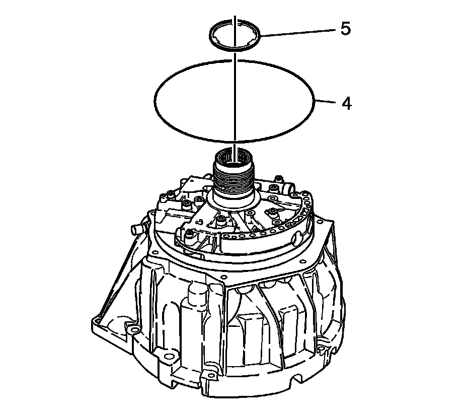
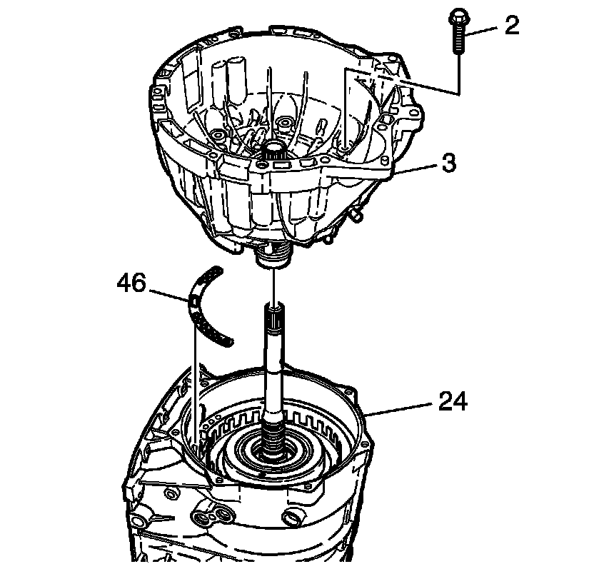
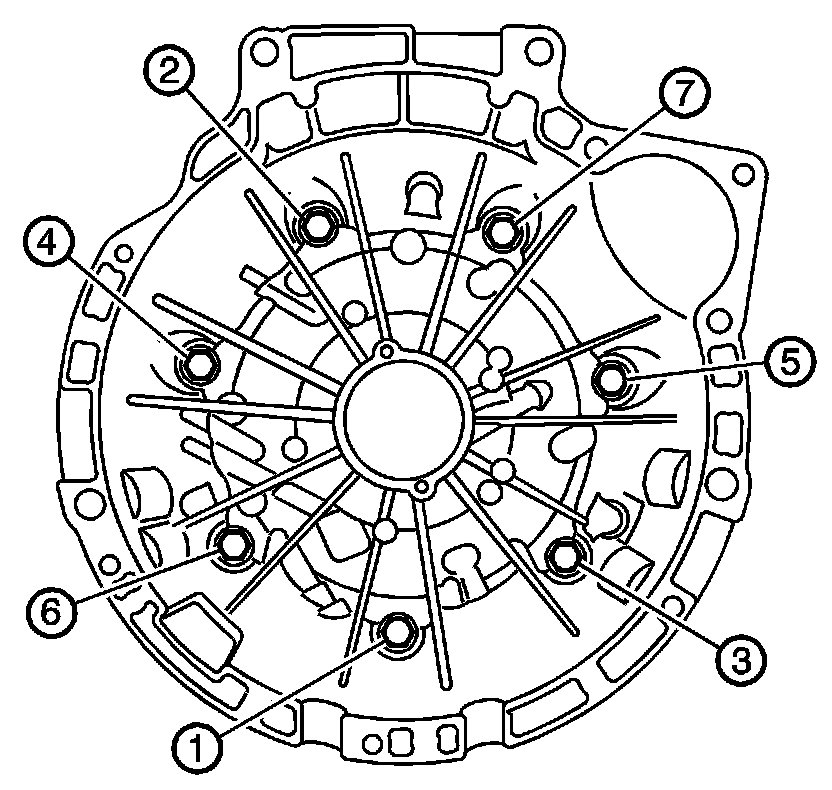

Torque Converter Housing Installation
Torque Converter Housing Installation
Tools Required
J 36850 Transjel Lubricant

1. Measure the distance from the bottom of the gage bar to the top of the direct and reverse clutch assembly. Record this as dimension X. Refer to the Reverse Clutch Housing Selective Thrust Washer Specifications (Reverse Clutch Housing Selective Thrust Washer Specifications) to determine the correct size to use.

2. Use J 36850 to install the NEW torque converter fluid seal (4) onto the torque converter housing.
3. Use J 36850 to install the reverse clutch housing thrust washer (5).

4. Install the NEW fluid pump cover gasket (46).
5. Install the torque converter housing (3) onto the case (24).
6. Install the torque converter housing bolts (2) and hand tighten.

Notice: Refer to Fastener Notice .
7. Tighten the torque converter housing bolts in sequence.
Tighten the housing bolts to 22 N.m (16 lb ft).